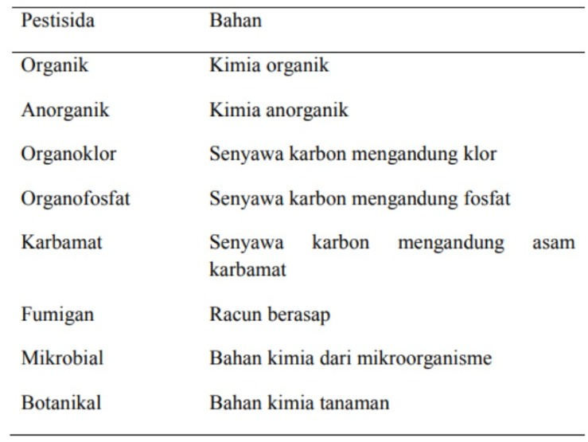
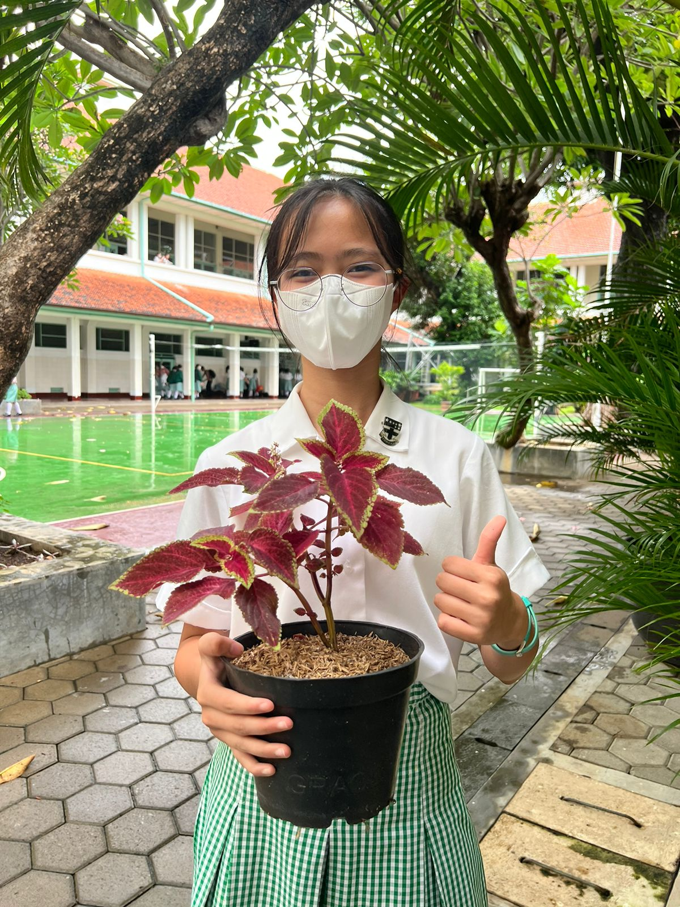
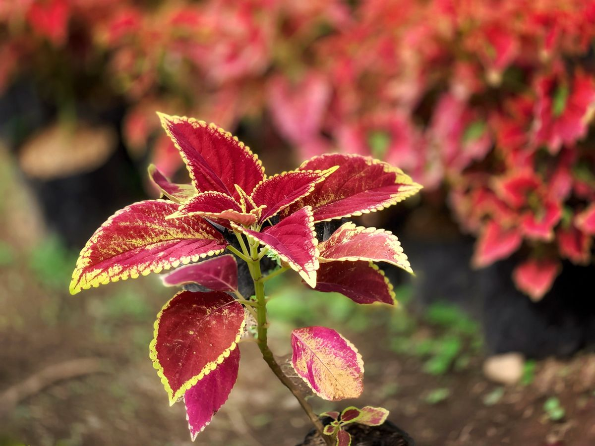
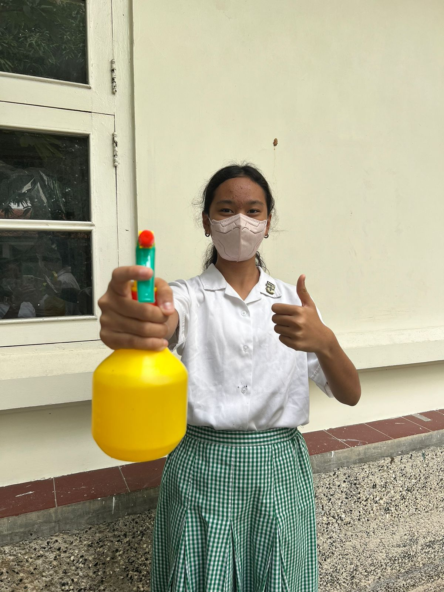
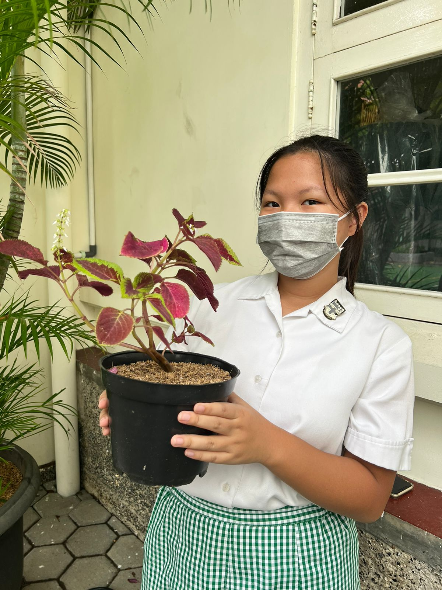
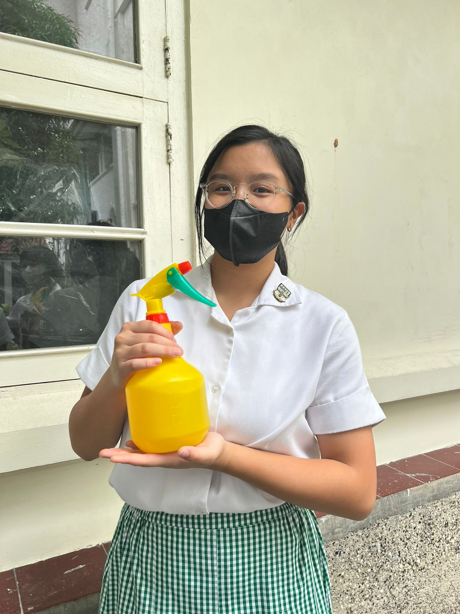
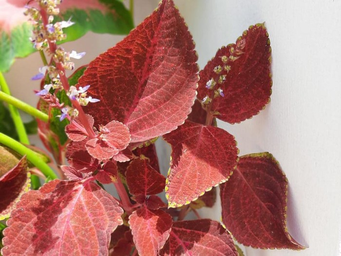

BAB II
TINJAUAN PUSTAKA
2.1 Pandangan Gereja Tentang Keutuhan Alam Ciptaan
Sebagai murid dari sekolah Katolik, kami juga memikirkan berbagai ajaran baik Kitab Suci maupun Gereja tentang masalah ini. Kami menganggap ajaran-ajaran berikut ini sebagai salah satu pedoman kami dalam melakukan eksperimen maupun menulis laporan. Kitab Kejadian 1: 28-30 “Manusia telah diberikan kuasa atas ikan-ikan di laut, burung-burung di udara dan segala binatang yang merayap di Bumi. Manusia juga telah diberi tumbuh-tumbuhan berbiji di seluruh bumi untuk dijadikan makanan. Sedangkan binatang-binatang diberikan olehNya tumbuhan-tumbuhan hijau.” dari kutipan Kejadian tersebut, dijelaskan bahwa sebagai ciptaan Allah yang paling mulia, kita manusia memiliki kuasa atas segalanya yang ada di Bumi. Namun, kekuasaan yang diberi itu tidak bisa digunakan secara semena-mena. Allah memberikan manusia kekuasaan pada Bumi karena hanya manusialah yang memiliki akal budi dan hati nurani. Kepercayaan Allah tersebut telah diberikan secara seluruh kepada manusia. Selain itu, kami juga dapat mengambil dari kitab Amsal 3:19-22, dimana dikatakan bahwa “Dengan hikmat TUHAN telah meletakkan dasar bumi, dengan pengertian ditetapkan-Nya langit, dengan pengetahuan-Nya air samudera raya berpencaran dan awan menitikkan embun Hai anakku, janganlah pertimbangan dan kebijaksanaan itu menjauh dari matamu, peliharalah itu, maka itu akan menjadi kehidupan bagi jiwamu, dan perhiasan bagi lehermu Maka engkau akan berjalan di jalanmu dengan aman , dan kakimu tidak akan terantuk. Jikalau engkau berbaring, engkau tidak akan terkejut, tetapi engkau akan berbaring dan tidur nyenyak. Janganlah takut kepada kekejutan yang tiba-tiba, atau kepada kebinasaan orang fasik, bila itu datang. Karena Tuhanlah yang akan menjadi sandaranmu, dan akan menghindarkan kakimu dari jerat.” Maka dari itu, kami dapat menyimpulkan bahwa Gereja memandang alam ciptaan sebagai sesuatu yang harus dijaga dan dilestarikan, terutama oleh manusia, sebagai satu-satunya makhluk hidup yang memiliki akal budi, hati nurani. Untuk melestarikan binatang maupun tumbuhan yang merupakan alam di permukaan Bumi, manusia harus menjaga tumbuh-tumbuhan hijau yang menjadi makanan mereka maupun tumbuhan berbiji yang menjadi sumber makanan.
Paus Fransiskus juga mengeluarkan ensiklik keduanya yang berjudul “Laudato Si”, yang berarti “Terpujilah Engkau, Tuhanku”. Ensiklik tersebut merupakan seruan dan panduan dari Paus mengenai lingkungan hidup, mengajak dan mengingatkan manusia untuk peduli terhadap alam semesta. Di dalam buku ini telah dijelaskan mengenai pentingnya menjaga lingkungan sekitar, terutama mengetahui bahwa beberapa dari kami sering melupakan bahwa kami sendiri berasal dari debu tanah. Pernyataan tersebut ditegaskan ulang dengan Kitab Kejadian 2: 7; “tubuh kita sendiri tersusun dari unsur-unsur yang sama dari bumi, dan udaranya memberi kita nafas serta airnya menghidupkan dan menyegarkan kita. sentralitas hidup dan pribadi manusia yang tetap memutar pada alam dan lainnya.”. Tidak sampai situ saja, ensiklik ini juga menyinggung tentang pendidikan untuk perjanjian antar manusia dan lingkungan hidup. Contohnya dijelaskan akan kesadaran dari kegentingan krisis budaya dan ekologis harus dijadikan sebuah adat yang baru. Kami juga ingin mengutip dari Ensiklik Laudato Si; “orang-orang muda memiliki kepekaan ekologis baru dan semangat yang murah hati, dan beberapa dari mereka membuat upaya mengagumkan untuk melindungi lingkungan hidup”. Dari situ, dapat disimpulkan bahwa kami sebagai orang muda harus peka dan memiliki keinginan untuk melindungi lingkungan sekitar kami yang telah dianugerahkan oleh Allah. Oleh karena itu, kami telah merancang produk yang didasarkan oleh bioteknologi demi kebaikan dan keberlangsungan alam terutama flora.
2.2 Dampak Pestisida Organik pada Lingkungan
Seperti yang sudah dikatakan, manusia adalah satu satunya makhluk dengan akal budi, yaitu cara berpikir. Kami adalah satu-satunya makhluk hidup yang dapat memikirkan solusi untuk memperbaiki lingkungan sekitar. Salah satunya adalah dengan menjaga dan memeliharanya.
Dalam Kitab Kejadian 1: 11-12, Berfirmanlah Allah: "Hendaklah tanah menumbuhkan tunas-tunas muda, tumbuh-tumbuhan yang berbiji, segala jenis pohon buah-buahan yang menghasilkan buah yang berbiji, supaya ada tumbuh-tumbuhan di bumi." Dan jadilah demikian. Tanah itu menumbuhkan tunas-tunas muda, segala jenis tumbuh-tumbuhan yang berbiji dan segala jenis pohon-pohonan yang menghasilkan buah yang berbiji. Allah melihat bahwa semuanya itu baik.” Usaha menjaga dan memelihara alam bisa dengan cara menanam tanaman untuk melestarikannya, memelihara tumbuhan baik milik pribadi maupun yang liar dengan tidak menyakiti tumbuhan, menanam tumbuhan, serta merawat tumbuhan.
Allah juga pernah mengatakan dalam Kitab Kejadian 1: 26-28, Berfirmanlah Allah: "Baiklah Kita menjadikan manusia menurut gambar dan rupa Kita, supaya mereka berkuasa atas ikan-ikan di laut dan burung-burung di udara dan atas ternak dan atas seluruh bumi dan atas segala binatang melata yang merayap di bumi." Maka Allah menciptakan manusia itu menurut gambar-Nya, menurut gambar Allah diciptakan-Nya dia; laki-laki dan perempuan diciptakan-Nya mereka. Allah memberkati mereka, lalu Allah berfirman kepada mereka: "Beranakcuculah dan bertambah banyak ; penuhilah bumi dan taklukkanlah itu, berkuasalah atas ikan-ikan di laut dan burung-burung di udara dan atas segala binatang yang merayap di bumi. ", Manusia diciptakan menurut gambar dan rupa Allah supaya mereka berkuasa atas alam. Allah juga memberi perintah agar manusia beranak cucu dan memenuhi bumi agar dapat menguasai alam. Dari sini, berarti Gereja mengajarkan bahwa manusia dapat berusaha untuk memiliki keturunan karena manusia yang dapat menjaga alam, sebab manusia yang berkuasa atas hewan dan tumbuhan di bumi. Dengan adanya manusia, alam akan bisa terjaga dan terpelihara, karena kami merupakan ciptaan Allah yang serupa dengan-Nya dan yang mampu menjaga alam. Dengan adanya pembuatan pestisida organik ini, kami juga ikut berperan dalam menjaga dan melestarikan ciptaan Allah karena ini akan mencegah kerusakan tumbuhan dan juga bahaya bagi orang-orang di sekitar. Pestisida sendiri memiliki manfaat untuk menjaga tumbuhan dari hama, dan dengan adanya pestisida organik ini, kami juga ikut menjaga kesehatan orang-orang kesehatan orang-orang yang menggunakan hasil tanaman dari pestisida tersebut.
2.3 Hubungan Produk Pestisida Organik Dengan Ajaran Gereja
Menurut USEPA (United States Environmental Protection Agency), pestisida merupakan zat atau campuran yang digunakan untuk mencegah, memusnahkan, menolak, atau memusuhi hama dalam bentuk hewan, tanaman dan mikroorganisme pengganggu (Zulkanain, 2010). Pestisida memiliki dua jenis, yaitu yang alami atau nabati dan pestisida kimia. Menurut Prameswari (2007), bahan-bahan kimia (pestisida) telah dibuktikan secara nyata dan jelas memberikan dampak buruk. Penggunaan bahan-bahan kimia pada pertanian dianggap dapat membantu kemajuan dan perkembangan pertanian selanjutnya. Namun pada negara-negara berkembang telah sadar bahwa bahan kimia justru merupakan penyebab utama terjadinya pencemaran lingkungan. Oleh karena itu negara berkembang telah mengurangi penggunaan bahan kimia, dan lebih menyukai produk-produk pertanian yang organik atau bebas bahan kimia, serta ramah lingkungan. Dari sini kami bisa menyimpulkan, bahwa pestisida kimia memberikan dampak yang buruk bagi lingkungan sekitar. Maka, kami pun berusaha untuk membuat pestisida alami yang aman bagi lingkungan dan juga manusia.
Menurut The United States Environmental Control Act, pestisida merupakan semua zat yang khusus digunakan untuk mengendalikan, mencegah, atau menangkal gangguan serangga, binatang pengerat, nematode, gulma, virus, bakteri, serta jasad renik yang dianggap hama, kecuali virus, bakteri atau jasad renik lain yang terdapat pada hewan dan manusia. Sedangkan menurut FAO dan US EPA tahun 2002, pestisida nabati atau alami merupakan bagian dari kelompok biokimia karena didalamnya terdapat biotoksin. Pestisida biokimia adalah pestisida yang mengandung bahan alami yang dapat mengendalikan hama dengan mekanisme non toksik. Berdasarkan penelitian Grainge et al., tahun 1984 Sastrosiswojo (2002), dilaporkan terdapat 1800 jenis tanaman yang mengandung pestisida nabati yang dapat atau sudah digunakan untuk mengendalikan hama. Menurut MoralloRijesus (1986) dalam Sastra Siswojo (2002), jenis tanaman dari family Asteraceae, Fabaceae dan Euphorbiaceae, dilaporkan paling banyak mengandung bahan insektisida nabati. Jika dihubungkan dengan ajaran Gereja, Paus Fransiskus juga pernah menyinggung bahwa kami harus menjaga alam ciptaan Allah yang Maha Esa. Beliau juga mengingatkan kami bahwa manusia berasal dari debu tanah dalam Ensiklik Laudato Si. Oleh karena itu, sudah menjadi kewajiban kami untuk menjaga alam, terutama mengetahui bahwa alam merupakan sebagian dari jiwa kami.
Peraturan menteri Pertanian Nomor : 07 /Permentan /SR. 140 /2 /2007 mendefinisikan bahwa pestisida adalah zat kimia atau bahan lain dan jasad renik serta virus yang digunakan untuk:
- Memberantas atau mencegah hama-hama tanaman, bagian-bagian tanaman atau hasil-hasil pertanian,
- Memberantas rerumputan,
- Mematikan daun dan mencegah pertumbuhan tanaman yang tidak diinginkan,
- Mengatur atau merangsang pertumbuhan tanaman atau bagian bagian tanaman, tidak termasuk pupuk,
- Memberantas atau mencegah hama hama luar pada hewan-hewan piaraan dan ternak,
- Memberantas dan mencegah hama-hama air,
- Memberantas atau mencegah binatang-binatang dan jasad-jasad renik dalam rumah tangga, bangunan dan alat-alat pengangkutan, dan
- Memberantas atau mencegah binatang-binatang yang dapat menyebabkan penyakit pada manusia atau binatang yang perlu dilindungi dengan penggunaan pada tanaman, tanah atau air.
Pestisida merupakan bahan kimia yang digunakan untuk membunuh hama, baik insekta, jamur maupun gulma. Pestisida telah secara luas digunakan untuk tujuan memberantas hama dan penyakit tanaman dalam bidang pertanian. Pestisida juga digunakan dirumah tangga untuk memberantas nyamuk, kecoa dan berbagai serangga pengganggu lainnya. Dilain pihak pestisida ini secara nyata banyak menimbulkan keracunan pada orang (Kementan, 2007). Kematian yang disebabkan oleh keracunan pestisida jarang dilaporkan, hanya beberapa saja yang dipublikasikan terutama karena disalahgunakan (untuk bunuh diri). Dewasa ini bermacam-macam jenis pestisida telah diproduksi dengan usaha mengurangi efek samping yang dapat menyebabkan berkurangnya daya toksisitas pada manusia, tetapi sangat toksik pada serangga. Bila dihubungkan dengan pelestarian lingkungan maka penggunaan pestisida perlu diwaspadai karena akan membahayakan kesehatan bagi manusia maupun makhluk hidup lainnya.
Dalam pembuatan pestisida organik ini, ekstrak daun jeruk nipis dalam pestisida mengandung beberapa metabolit sekunder antara lain saponin, minyak atsiri, dan limonoid. Ketika kandungan metabolit sekunder ini dapat membasmi hama serangga. Tiap metabolit ini memiliki fungsi dan perannya masing-masing. Kami juga menggunakan mikroorganisme efektif (EM). Penggunaan mikroorganisme efektif (EM) merupakan salah satu teknologi yang dapat digunakan dalam usaha pengelolaan pertanian yang mampu mengurangi pengaruh negatif terhadap lingkungan. EM4 terdiri atas kultur campuran mikroorganisme bermanfaat dan hidup secara alami serta dapat diterapkan sebagai inokulum untuk meningkatkan keragaman mikroorganisme tanah dan tanaman (Higa & Parr 1997). EM4 mengandung 90% bakteri Lactobacillus sp. (bakteri penghasil asam laktat) pelarut fosfat, bakteri fotosintetik, Streptomyces sp, jamur pengurai selulosa dan ragi. EM4 merupakan suatu tambahan untuk mengoptimalkan pemanfaatan zat-zat makanan karena bakteri yang terdapat dalam EM4 dapat mencerna selulosa, pati, gula, protein, lemak (Surung, 2008).
Lalu, di dalam pestisida organik ini, terdapat gula. Di bidang pertanian, belum banyak orang yang mengetahui manfaat gula. Padahal, keberadaannya sangat bermanfaat guna meningkatkan kualitas hasil pertanian. Dimana larutan gula tersebut bisa digunakan sebagai salah satu bahan dasar pembuatan pupuk organik yang membantu meningkatkan kualitas pertanian. Salah satu manfaat larutan gula ini adalah digunakan sebagai bahan campuran pembuatan kompos sistem aerob. Kompos sistem aerob ini bisa dibuat tanpa harus menggunakan cetakan serta tutup plastik hitam sebagaimana kompos sistem anaerob. Larutan gula juga berfungsi untuk memperoleh energi bagi perkembangbiakan jumlah EM yang diaktifkan selama proses pembuatan kompos. (Witono, 2016). Semua ini akan diperjelas pada Bab III.
Setelah melakukan banyak riset dan penelitian tentang pestisida organik, dapat disimpulkan bahwa produk yang kami buat telah mencerminkan ajaran dari Gereja Katolik. Pernyataan ini dapat dibuktikan pada yang tertulis di Ensiklik Laudato Si karya Paus Fransiskus yang berfokus pada kepedulian terhadap lingkungan alam dan semua orang, dan penelitian kami tentang pestisida organik bertujuan untuk mengurangi kerusakan lingkungan yang telah diakibatkan oleh pestisida kimia/sintetis. Ini merupakan cara kami, sebagai orang muda dalam mengimplementasikan kepekaan, kepedulian dan semangat jiwa muda untuk menjaga lingkungan dan orang lain di sekitar kami.
2.4 Penggunaan Pestisida
Berdasarkan asal katanya pestisida berasal dari Bahasa Inggris yaitu pest berarti hama dan cida berarti pembunuh. Yang dimaksud dengan hama bagi petani sangat luas yaitu : tungau, tumbuhan pengganggu, penyakit tanaman yang disebabkan oleh fungi (jamur), bakteria dan virus,nematoda (cacing yang merusak akar), siput, tikus, burung dan hewan lain yang dianggap merugikan. Pestisida yang digunakan di bidang pertanian secara spesifik sering disebut produk perlindungan tanaman (crop protection products) untuk membedakannya dari produk-produk yang digunakan dibidang lain. mencegah binatang-binatang yang dapat menyebabkan penyakit pada manusia atau binatang yang perlu dilindungi dengan penggunaan pada tanaman, tanah dan air.
Pengertian pestisida sangat luas dan mencakup produk-produk yang digunakan dibidang pengelolaan tanaman (pertanian, perkebunan, kehutanan). Peternakan, kesehatan hewan, perikanan, penyimpanan hasil pertanian, pengawetan hasil hutan; kesehatan masyarakat (termasuk pengendalian vektor penyakit), bangunan (khusus pengendalian rayap), pestisida rumah tangga, fumigasi, serta pestisida industri. Secara khusus, pestisida yang digunakan dibidang pengelolaan tanaman disebut produk perlindungan tanaman (crop protection products, crop protection agents) atau pestisida pertanian.
2.5 Tata Nama Pestisida Kimia
Pestisida mempunyai tiga macam nama, yaitu :
- Nama umum (Common name) Yaitu nama yang telah didaftarkan pada International Standard Organization (ISO). Nama umum biasanya dipakai sebagai nama bahan aktif suatu pestisida.
- Nama kimia (Chemical name) Yaitu nama dari unsur atau senyawa kimia dari suatu pestisida yang terdaftar pada International Union for Pure dan Applied Chemistry
- Nama dagang (Trade name) Yaitu nama dagang dari suatu produk pestisida yang biasanya telah terdaftar dan mendapat semacam paten dari masing-masing Negara.
2.6 Toksisitas Pestisida Kimia
Toksisitas merupakan istilah dalam toksikologi yang didefinisikan sebagai kemampuan bahan kimia untuk menyebabkan kerusakan/injuri. Istilah toksisitas merupakan istilah kualitatif, terjadi atau tidak terjadinya kerusakan tergantung pada jumlah unsur kimia yang terabsorpsi. Sedangkan istilah bahaya (hazard) adalah kemungkinan kejadian kerusakan pada suatu situasi atau tempat tertentu;kondisi penggunaan dan kondisi paparan menjadi pertimbangan utama. Manusia dapat dengan aman menggunakan unsur berpotensi toksik jika mentaati aturan yang dibuat guna meminimalkan absorbsi unsur tersebut. Berikut adalah kategori toksisitas pada pestisida kimia:
- Kategori I Kata–kata kuncinya adalah “Berbahaya Racun” dengan simbol tengkorak dengan gambar tulang bersilang dimuat pada label bagi semua jenis pestisida yang sangat beracun.
- Kategori II Kata-kata kuncinya adalah “Awas Beracun” digunakan untuk senyawa pestisida yang mempunyai kelas toksisitas pertengahan.
- Kategori III Kata-kata kuncinya adalah “Hati-Hati” yang termasuk dalam kategori ini adalah semua pestisida yang daya racunnya rendah.
2.7 Senyawa Kimia Pestisida Kimia dan Dampaknya pada Lingkungan
Pestisida digolongkan berdasarkan pada jenis bahan kimia yang terkandung di dalamnya. Jenis-jenis pestisida yang digolongkan menurut dapat dilihat pada tabel berikut :
- Senyawa Kimia Organoklorin
- Senyawa Kimia Organofosfat
- Senyawa Kimia Karbamat
- saluran gastrointestinal (tertelan);
- saluran paru – paru (terhirup); dan
- penetrasi kulit.
Organoklorin merupakan polutan yang bersifat persisten dan dapat terakumulasi di alam serta bersifat beracun terhadap manusia dan makhluk hidup lainnya. Organoklorin termasuk ke dalam golongan pestisida yang bagus dan ampuh, namun memiliki banyak dampak negatif terhadap lingkungan. Sebagai pestisida, sifat persistensinya sangat menguntungkan untuk mengontrol hama.
Pestisida jenis ini masih digunakan di negara-negara berkembang, terutama di daerah khatulistiwa. Hal ini dikarenakan harganya yang sangat murah, keefektifannya, dan persistensi nya. Kebanyakan negara berkembang terletak di daerah yang beriklim tropis dimana pada umumnya memiliki temperatur dan curah hujan yang tinggi. Iklim yang seperti itu dapat membuat perpindahan residu senyawa melalui udara dan air secara cepat dan akhirnya berkontribusi terhadap kontaminasi global.
Organofosfat adalah insektisida yang paling beracun di antara jenis pestisida lainnya dan sering menyebabkan keracunan pada orang. Termakan hanya dalam jumlah sedikit saja dapat menyebabkan kematian, tetapi diperlukan beberapa milligram untuk dapat menyebabkan kematian pada orang dewasa.
Umumnya karbamat digunakan untuk membasmi hama tanaman pangan dan buah-buahan pada padi, jagung, jeruk, alfalfa, ubi jalar, kacang-kacangan dan tembakau. Dengan dilarangnya sebagian besar pestisida golongan organoklorin (OC) di Indonesia, maka pestisida golongan organofosfat (OP) dan karbamat menjadi alternatif bagi petani di dalam mengendalikan hama penyakit tanaman di lapangan.
Golongan karbamat merupakan racun kontak yang menurunkan aktivitas enzim kolinesterase darah dan bekerja sebagai racun saraf. Cara masuk pestisida ke dalam tubuh menentukan kecepatan penyerapan, sehingga berpengaruh pada intensitas dan durasi keracunan. Pestisida masuk ke dalam tubuh dapat melalui beberapa cara yaitu:
2.8 Pestisida Organik
Pestisida organik merupakan ramuan obat-obatan untuk mengendalikan hama dan penyakit tanaman yang dibuat dari bahan-bahan alami. Bahan-bahan untuk membuat pestisida organik diambil dari tumbuhan-tumbuhan, hewan dan mikroorganisme. Karena dibuat dari bahan-bahan yang terdapat di alam bebas, pestisida jenis ini lebih ramah lingkungan dan lebih aman bagi kesehatan manusia.
Bila dibandingkan dengan pestisida kimia, pestisida organik mempunyai beberapa kelebihan.
- Lebih ramah terhadap alam, karena sifat material organik mudah terurai menjadi bentuk lain. Sehingga dampak racunnya tidak menetap dalam waktu yang lama di alam bebas.
- Residu pestisida organik tidak bertahan lama pada tanaman, sehingga tanaman yang disemprot lebih aman untuk dikonsumsi.
- Dilihat dari sisi ekonomi penggunaan pestisida organik memberikan nilai tambah pada produk yang dihasilkan. Produk pangan non-pestisida harganya lebih baik dibanding produk konvensional. Selain itu, pembuatan pestisida organik bisa dilakukan sendiri oleh petani sehingga menghemat pengeluaran biaya produksi.
- Penggunaan pestisida organik yang diintegrasikan dengan konsep pengendalian hama terpadu tidak akan menyebabkan resistensi pada hama.
Namun ada beberapa kelemahan dari pestisida organik, antara lain kurang praktis. Pestisida organik tidak bisa disimpan dalam jangka lama. Setelah dibuat harus segera diaplikasikan sehingga kami harus membuatnya setiap kali akan melakukan penyemprotan. Dari sisi efektifitas, hasil penyemprotan pestisida organik tidak secepat pestisida kimia sintetis. Perlu waktu dan frekuensi penyemprotan yang lebih sering untuk membuatnya efektif. Selain itu, pestisida organik relatif tidak tahan terhadap sinar matahari dan hujan. Namun seiring perkembangan teknologi pertanian organik telah banyak inovasi-inovasi yang ditemukan dalam menanggulangi hambatan itu.
Bagian tumbuhan yang diambil untuk bahan pestisida organik biasanya mengandung zat aktif dari kelompok metabolit sekunder seperti alkaloid, terpenoid, fenolik dan zat-zat kimia lainnya. Bahan aktif ini bisa mempengaruhi hama dengan berbagai cara seperti penghalau (repellent), penghambat makan (antifeedant), penghambat pertumbuhan (growth regulator), penarik (attractant) dan sebagai racun mematikan.
2.9 Tanaman Miana
Miana merupakan tanaman bersemak dengan nama ilmiah Coleus Scutellarioides. Tanaman yang merupakan tanaman semusim berbatang lunak dengan batang percabangan monopodial ini memiliki tinggi yang dapat mencapai 1,5m. Miana mempunyai banyak manfaat. Sigresing (Batak), Iler (Jawa Tengah), dan Serewung (Minahasa) merupakan nama lain dari tanaman Miana ini dari berbagai daerah.
Daun dari tanaman Miana ini merupakan daun tunggal berbentuk bulat telur dengan ujung daun yang meruncing serta tepiannya yang rata dan pangkal yang tumpul. Manfaat dari daun miana antara lain adalah sebagai obat-obatan untuk wasir, bisul, demam nifas, radang telinga, dan haid tidak teratur. Senyawa fenolik dan flavonoid yang berfungsi sebagai antioksidan dan menangkal radikal bebas terkandung di dalam daun Miana tersebut. Selain senyawa fenolik dan flavonoid, daun Miana juga mengandung vitamin A dan C yang dapat meningkatkan sistem kekebalan tubuh.
Tanaman Miana memiliki bunga yang merupakan bunga majemuk berbentuk tandan di ujung batangnya. Bunga ini memiliki kelopak yang berbentuk corong berwarna hijau muda dengan mahkotanya yang indah berbentuk bibir berwarna ungu keputih-putihan. Benang sari yang dimiliki bunga ini ada 2 berwarna putih serta putik kecil berwarna ungu. Bunga yang berbentuk kotak dan bulat serta mengandung biji kecil, pipih, mengkilap ini memiliki 2 warna. Pada saat bunga masih muda, akan berwarna hijau, sedangkan akan berubah menjadi coklat ketika sudah matang atau tua.
Playlist - !!
Guess what we made to accompany you scrolling through our report! Yes, we made a playlist full of our top picks!
Gallery -!!











